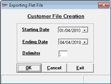

This option is used to create file containing customer information. This file can be used to make customer analysis at the Head Office and plan for various customers related sales schemes.
How to reach: Housekeeping > Data Export Masters > Customer Information
The Exporting Flat File window is displayed.

Starting Date: Enter the start date.
Ending Date: Enter the end date.
Delimiter: Enter the delimiter like comma, semicolon etc.,